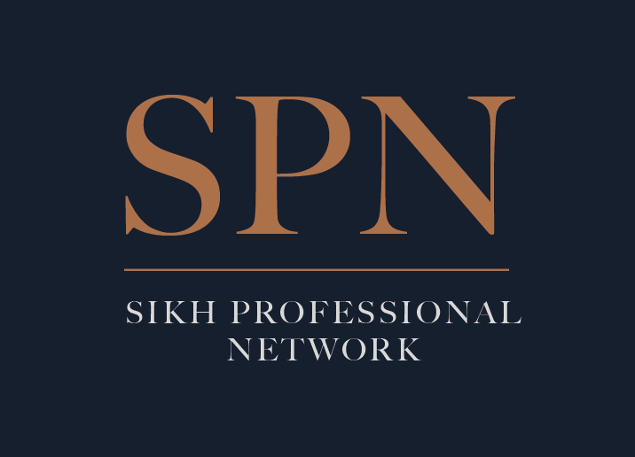

Discipline
Rehat & Excellence
We believe in striving for personal and professional excellence through discipline, responsibility and continuous growth.
Sikh Professionals Network
The network empowers individuals across the UK to develop as leaders and achieve professional success — built on integrity, heritage and seva, to grow in their careers while remaining grounded in their Sikh identity.
The Sikh Professionals Network (SPN) brings together Sikh students, graduates, professionals, advisors, and leaders aged 18 and over across the UK. Through networking, mentoring, educational talks, resources and guidance, SPN helps members build meaningful connections and progress in their careers. The network also encourages individuals to strengthen their Sikh identity and uphold the values of service, leadership and community engagement.
Our mission is to empower Sikh professionals to grow in confidence, excellence and purpose while making a positive contribution to society through Sikh values. We aim to inspire a generation of confident professionals who lead with integrity, serve with humility and contribute meaningfully to wider society.

SPN was established to address a critical need within the Sikh community: a trusted space where professional development, personal identity, values, and service can be explored together. Many professionals have access to career guidance, but not always support that reflects their faith, culture and lived experience. Others receive encouragement through community spaces, but may have limited access to structured professional development, mentoring and networking opportunities.
SPN bridges this gap by bringing these elements together across the UK in a supportive and purposeful environment.
Through events, mentoring, guidance, resources and expert connections, SPN helps members build confidence, navigate their career journeys, develop as leaders and use their knowledge and experience to uplift others.
Rehat & Excellence
We believe in striving for personal and professional excellence through discipline, responsibility and continuous growth.
Sach & Naitikta
We believe Sikh professionals should lead with honesty, ethics, integrity and accountability in both professional and community life.
Miri-Piri Leadership
We encourage confidence, independent thought, and leadership rooted in Sikh principles.
Service
We use professional knowledge, influence and resources to uplift others and contribute positively to society.
Virsa
We honour the Sikh legacy by strengthening identity, deepening historical knowledge and taking pride in our roots.
At SPN, we connect you with a credible, grounded network of Sikh professionals who truly understand the unique balance between career ambition, cultural identity, and Seva (service).
01.
Connect with mentors across the UK to make big career decisions, build confidence, nail interviews, and fast-track your professional growth.
02.
Cross-Sector Connections: Break out of your bubble. Connect with diverse professionals across the UK for authentic collaboration, learning, and trusted business referrals.
03.
Values-Led Leadership: Leadership is more than climbing the ladder — we encourage members across the UK to lead with discipline, integrity, confidence, and service.
Built from the ground up specifically for Sikh professionals, ambitious graduates, and emerging leaders right here across the UK.
We aren't just about networking. Our entire community is anchored in five foundational values: discipline, integrity, sovereignty, heritage, and seva.
Growth doesn't stop. We actively support Sikh adults at every single stage of their professional journey, from fresh grads to seasoned executives.
We bridge the gap between success and purpose, seamlessly connecting your career development with meaningful service to society.
Join a growing network of Sikh professionals committed to excellence, identity and service.
Common questions
Everything you need to know about SPN and getting involved.
SPN exists to connect and empower Sikh professionals across the UK. We provide a trusted space where career development, Sikh identity, and the value of seva (service) come together — helping members grow professionally while remaining rooted in their heritage.
SPN is a professional network rooted in Sikh values. It is not a religious organisation, but it acknowledges that for many Sikh professionals, faith and identity are integral to who they are and how they work. SPN provides a space where both dimensions coexist and strengthen one another.
Absolutely. SPN is open to anyone aged 18 and over — students, graduates, early-career professionals, and experienced leaders alike. Whether you are just starting out or have decades of experience, there is a place for you in the network.
Yes. SPN plans to run a mix of in-person events across the UK as well as online webinars, panel discussions, and virtual mentoring sessions — ensuring members from different parts of the country can all participate and benefit.